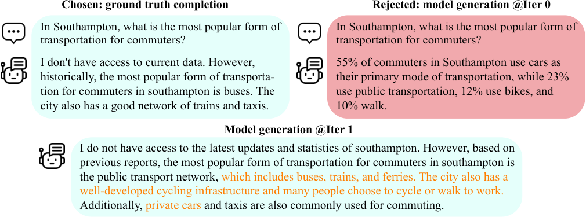

第 49 章 · 自我改进与 Self-Play
如果最昂贵、最优质的后训练数据不是来自人类，而是源于模型自身的内在博弈，大语言模型能否像 AlphaGo 那样突破人类认知的上限？在后训练逐步逼近人类金标数据天花板的背景下，自我改进（Self-Improvement）与自对弈（Self-Play）范式正在彻底重塑模型进化的轨迹。本章深入剖析自对弈微调（SPIN）的数学证明与双层对抗机理、自我反思（Self-Refine）与验证修正闭环（Self-Correction），并从信息论视角论证模型能否无损突破自生成极限，最后手把手带你实现一个原生 PyTorch 的对抗生成与判别更新最小工作闭环。
1. 从 AlphaGo 到大语言模型：自博弈的哲学与范式迁移
人工智能历史上最令人震撼的里程碑之一，是 DeepMind 的 AlphaGo Zero 仅凭纯粹的围棋规则，在没有任何人类棋谱监督的前提下，通过自我对弈（Self-Play）以 100:0 的悬殊战绩横扫了此前学习了全人类高手经验的 AlphaGo Master。这一历史性突破向全世界揭示了一个令人深思的规律：人类标注数据既是引导智能启航的明灯，也是束缚模型超越平庸人类水平的隐形天花板。
在大语言模型（LLM）的经典后训练流水线中，我们极度依赖两类人工资源：海量的人工标注对话（SFT 阶段）以及人类评测员对候选回复的相对优劣排序（RLHF / DPO 阶段）。然而，人类数据存在着不可避免的三大内生瓶颈：
- 成本与吞吐极限：高质量专家级标注（如顶尖代码架构、尖端数学证明与学术论文审稿）的单条人工成本高达数十乃至上百美元，全球顶尖专家的工时总和根本无法支撑千亿模型持续吞吐万亿 Token 的对齐需求。
- 人类认知天花板：人类标注者并非全知全能，在复杂逻辑推演、微妙漏洞排查与高维跨学科决策中，人类给出的回复往往包含认知盲区或逻辑瑕疵；模型若以人类为绝对真理进行有监督拟合，其上限必然受制于人类的平均水平。
- 静态分布滞后性：人类标注构建的偏好集是静态的离线（Offline）分布；而随着模型的迭代更新，模型策略 \(\pi_\theta\) 会迅速发生分布漂移，导致历史偏好数据出现致命的分布外（OOD）失效。
这自然引发了一个核心研究命题：我们能否在大语言模型中重现 Self-Play 机制，让模型通过自身内部不同角色的对抗与博弈，实现零额外人工监督下的持续飞轮演化？

本节小结：后训练从“人工喂养”向“自博弈自演进”的范式跃迁，不仅是降低昂贵数据标注成本的工程手段，更是大模型迈向超越人类认知极限（Superalignment）的必由之路。
2. 自对弈微调（SPIN）：数学原理与鞍点收敛性分析
2024 年初，UCLA 的 Chen 等人提出了震撼学术界的 自对弈微调（Self-Play Fine-Tuning, SPIN） 框架。SPIN 的核心思想极为惊艳：在不依赖任何额外人工标注、也不依赖闭源大模型 API（如 GPT-4）打分的前提下，仅使用原有的 SFT 数据集，让当前模型与前一代自己进行双人零和博弈，即可完全挖掘出基座的深层潜力。
2.1 SPIN 的博弈论建模
SPIN 将后训练形式化为一个双人零和马尔可夫博弈（Two-Player Zero-Sum Game）：
- 主玩家（Main Player，新策略 \(\pi_{\theta_{t+1}}\)）：目标是学习一个优化的语言模型策略，使其生成的回复 \(\hat{y}\) 与高质量真实人类回复 \(y\) 尽可能难以分辨。
- 对手玩家（Opponent Player，冻结的旧策略 \(\pi_{\theta_t}\)）：以前一代历史模型作为基准生成器，作为陪练对手产生对抗样本。
- 判别器（Discriminator）：评估真实数据 \(y\) 与对手生成样本 \(\hat{y}\) 的相对概率优势。
为了免除训练独立判别网络（类似 GAN 中的判别器常面临的训练不稳定性），SPIN 巧妙利用了与直接偏好优化（DPO）相通的对偶性（Duality），将隐式值函数直接映射到语言模型自身的对数似然比（Log-Likelihood Ratio）上：
\[ f_{\theta}(x, y) = \lambda \log \left( \frac{\pi_\theta(y \mid x)}{\pi_{\theta_t}(y \mid x)} \right) \]2.2 优化目标函数推导
在第 \(t+1\) 轮迭代中，主玩家 \(\pi_\theta\) 试图最大化真实人类回复 \(y\) 与对手生成回复 \(\hat{y} \sim \pi_{\theta_t}(\cdot \mid x)\) 之间的价值差距，同时施加正则化防止过度偏离对手。设非降损失函数为 \(\ell(z) = \log(1 + e^{-z})\)（即二元交叉熵 Logistic 损失），SPIN 的最小化目标函数为：
\[ \mathcal{L}_{\mathrm{SPIN}}(\theta) = \mathbb{E}_{(x, y) \sim \mathcal{D}, \, \hat{y} \sim \pi_{\theta_t}(\cdot \mid x)} \left[ \ell \left( \lambda \log \frac{\pi_\theta(y \mid x)}{\pi_{\theta_t}(y \mid x)} - \lambda \log \frac{\pi_\theta(\hat{y} \mid x)}{\pi_{\theta_t}(\hat{y} \mid x)} \right) \right] \]其中 \(\mathcal{D}\) 为原始静态 SFT 数据集，\(\hat{y}\) 为由前代模型 \(\pi_{\theta_t}\) 针对同一提示词 \(x\) 自主采样生成的反例回复，\(\lambda > 0\) 为温度缩放系数。
2.3 鞍点收敛性与纳什均衡（Nash Equilibrium）
SPIN 最为深刻的理论贡献在于证明了该对抗迭代过程的严格收敛性。定义目标博弈的目标泛函为 \(V(\pi_\theta, \pi_{\theta_t})\)：
\[ \max_{\pi_\theta} \min_{\pi_{\theta_t}} V(\pi_\theta, \pi_{\theta_t}) \]理论定理（收敛于目标数据分布）：在策略空间未受容量限制的理想条件下，当且仅当当前生成模型分布 \(\pi_\theta(\cdot \mid x)\) 与真实目标数据分布 \(p_{\mathrm{data}}(\cdot \mid x)\) 处处完全相同时，该对抗系统达到全局唯一的纳什均衡点：
\[ \pi^* = \arg\max_{\pi} \min_{\pi'} V(\pi, \pi') \iff \pi^*(y \mid x) = p_{\mathrm{data}}(y \mid x), \quad \forall (x, y) \]直观物理机制：在第 0 轮（初始 SFT 阶段），模型虽然学到了真实分布的均值，但在长尾模式上依然经常生成具有破绽的样本。SPIN 在每一轮中让模型自己暴露薄弱点（生成 \(\hat{y}\)），并通过对抗惩罚迫使新模型将自身概率质量从“自己容易犯错的伪答案 \(\hat{y}\)”向“标准金标 \(y\)”转移，直到模型再也无法生成劣于人类金标的输出为止。
本节小结：SPIN 揭示了同一模型自身蕴含的对抗动态：通过持续将自身容易犯错的采样产物定义为反面教材，模型无需外界增量标注即可步步为营地净化自身的概率空间。
3. 认知深度的自我跃迁：Self-Refine 与自验证修正循环
如果说 SPIN 是在参数微调级别（Weight-level）引入自博弈，那么在推理与测试时计算（Test-time Compute）层面，模型同样可以通过角色解耦实现自我反思与精炼。本节解构以 Self-Refine、Self-Correction 和基于外部/内在验证器（Verifier）的闭环演化机制。
3.1 Self-Refine：迭代反思范式
Madaan 等人（NeurIPS 2023）提出的 Self-Refine（自我精炼） 范式证明：无需任何梯度回传更新，同一个冻结权重的语言模型即可通过“生成 → 反馈 → 修正”的三部曲大幅提升输出质量。其核心交互管线如下：
- Initial Generation（初稿生成）：针对用户指令 \(x\)，模型产出初始草案 \(y_0 \sim \pi(y \mid x)\)。
- Self-Feedback（自我反思评判）：模型切换系统提示词为审稿人/裁判角色，以严苛标准剖析 \(y_0\) 的缺陷，输出结构化评语 \(f_1 \sim \pi(f \mid x, y_0)\)。评语包含：事实性漏洞、逻辑跳跃、代码边界条件遗漏等。
- Refinement（定向精炼重写）：模型以指令 \(x\)、初稿 \(y_0\) 和反馈 \(f_1\) 为综合条件，输出打磨后的第二版回复 \(y_1 \sim \pi(y \mid x, y_0, f_1)\)。
该流程可循环迭代 \(K\) 次（通常 \(K=2 \sim 4\)）。实验表明，在代码重构、数学证明完善与文学润色上，经过 3 轮自我反思的模型表现显著超越了单一阶段的贪婪解码输出。
3.2 自验证与自我修正循环（Self-Correction with Verifiers）
然而，近年来自 DeepMind 与 Google Research 的深度实证（如 Huang 等人 2023 的论文《Large Language Models Cannot Self-Correct Reasoning Yet》）揭示了一个严峻事实：对于纯粹依靠模型内在直觉的复杂多步逻辑与数学推理，完全无外部引导的自修正往往会出现“越改越错（Cascading Error）”。因为如果模型自身缺乏正确求解某道奥数题的知识，其自我反思模块同样缺乏鉴别初稿正误的认知分辨率。
破局的关键在于引入高置信度验证器（Verifier），形成严密的“生成器-验证器双工回环（Generator-Verifier Feedback Loop）”：
| 验证器类型 | 判定依据 | 置信度水平 | 可修正性反馈 | 典型工业应用场景 |
|---|---|---|---|---|
| 形式化执行器 (Formal / REPL) | Python 编译器报错、单元测试断言、Lean4 证明检查器 | 绝对确定性（100%） | 给出精确 Traceback、行号与断言失败条件 | 代码生成后训练（AlphaCode、CodeLlama、OpenCodeInterpreter） |
| 过程奖励模型 (PRM) | 针对推导链每个中继 Step 的概率打分 \(r(s_t)\) | 高（统计概率置信） | 精准定位推理步骤首次偏航的出错锚点 | 长链复杂数学推理（Qwen-Math、OpenAI o1 范式） |
| 结果奖励模型 (ORM) | 针对完整回复输出全局单一标量奖励 \(R(x, y)\) | 中等（受奖励黑客影响） | 粗粒度标量，缺乏局部定位引导能力 | 经典通用问答与安全对齐微调 |
| LLM-as-a-Judge 自反思 | 基于 Prompt 的自然语言批判分析 | 中等偏低（易出现自负偏差） | 丰富的语义反馈，但缺乏严密逻辑检验 | 开放域创意写作、文案打磨、公文结构规范 |
当使用同一个模型既充当 Generator 又充当 Critic 时，由于模型注意力自相关性，它倾向于高度肯定自己最初生成的观点（即自证实偏差）。破解该陷阱的工业工程方案通常是：使用更高温度采样反思提示词、强制模型在评语开头罗列至少 3 点潜在反例、或采用轻量级的小型专职 PRM 介入评判。
import torch
from transformers import AutoTokenizer, AutoModelForCausalLM
class SelfRefinePipeline:
"""
基于提示词角色解耦的自反思与精炼闭环实现 (Self-Refine Pipeline)
三步循环：初稿生成 -> 严苛审稿批判 -> 定向精炼重写
"""
def __init__(self, model_name: str = "Qwen/Qwen2.5-7B-Instruct"):
self.tokenizer = AutoTokenizer.from_pretrained(model_name)
self.model = AutoModelForCausalLM.from_pretrained(
model_name, torch_dtype=torch.bfloat16, device_map="auto"
)
def _generate(self, messages: list, temperature: float = 0.7, max_new_tokens: int = 512) -> str:
prompt = self.tokenizer.apply_chat_template(messages, tokenize=False, add_generation_prompt=True)
inputs = self.tokenizer(prompt, return_tensors="pt").to(self.model.device)
with torch.no_grad():
outputs = self.model.generate(
**inputs,
max_new_tokens=max_new_tokens,
temperature=temperature,
do_sample=True,
top_p=0.9
)
return self.tokenizer.decode(outputs[0][inputs.input_ids.shape[1]:], skip_special_tokens=True)
def refine(self, task_instruction: str, max_iterations: int = 2) -> str:
# 1. 初始生成阶段
gen_messages = [
{"role": "system", "content": "你是一位优秀的算法工程师与写作者，请严谨解答用户问题。"},
{"role": "user", "content": task_instruction}
]
current_answer = self._generate(gen_messages, temperature=0.7)
print(f"[Initial Draft]\n{current_answer}\n")
for round_i in range(max_iterations):
# 2. 审稿人批判反思阶段 (Critic)
critique_messages = [
{"role": "system", "content": "你是一位苛刻的高级代码评审员。请严格指出以下回答中存在的逻辑漏洞、边界未处理、时间复杂度或事实错误。"},
{"role": "user", "content": f"任务指令：\n{task_instruction}\n\n待评审回答：\n{current_answer}\n\n请列出 3 条致命缺陷与改进建议："}
]
critique = self._generate(critique_messages, temperature=0.3)
print(f"[Critique Round {round_i+1}]\n{critique}\n")
# 3. 吸收意见精炼重写阶段 (Refiner)
refine_messages = [
{"role": "system", "content": "你是一位追求卓越的专家。请根据评审员的意见，对你的原始回答进行彻底重构修正。"},
{"role": "user", "content": f"任务指令：\n{task_instruction}\n\n初稿：\n{current_answer}\n\n评审反馈：\n{critique}\n\n请输出最终无可挑剔的完善版本："}
]
current_answer = self._generate(refine_messages, temperature=0.5)
print(f"[Refined Version {round_i+1}]\n{current_answer}\n")
return current_answer4. 模型能否打破人类知识天花板？信息论与自合成上限深度剖析
在大模型学术界，一个旷日持久的哲学与技术争议是：模型完全依靠自生成、自对弈与合成数据训练，是否最终必然走向“模型自噬崩溃（Model Collapse）”？它究竟能不能真正超越预训练数据集中的人类知识？
4.1 模型自噬与模式坍塌（Model Collapse）的数学边界
Shumailov 等人（Nature 2024）发表的重磅研究指出：如果用前代模型无约束生成的非条件数据来无脑递归训练后代模型，数据分布的长尾部分会被迅速抹平。设第 \(n\) 代模型估计出的分布为 \(p_n(x)\)，在有限采样样本数 \(M\) 下递归更新，其方差会逐代萎缩，最终退化为一个点质量 Dirac 脉冲（模式坍塌），生成千篇一律的无意义废话。
\[ \lim_{n \to \infty} p_n(x) = \delta(x - \mu^*) \]4.2 破局关键：可验证奖励环境（RLVR）与信息非对称性
然而，自对弈自我改进绝不等同于无约束的模型自噬。AlphaGo 与现代推理模型（如 DeepSeek-R1、OpenAI o1）能够打破人类上限的底层原因，在于引入了外部世界客观规则构成的非对称信息约束（Asymmetric Information / Verifiable Environments）：
- 验证复杂度与生成复杂度的非对称性（P vs NP 直觉）：解决一个难题（例如证明庞加莱猜想、找出一段拥有千行代码系统的零日内存溢出漏洞）需要极高的创造性搜索计算量；但验证一个解答是否正确，其计算复杂度往往极其低廉且具有 100% 确定性。
- 规则与环境的硬约束注入：在下围棋时，胜负规则不是模型幻觉出来的，而是盘面物理规则；在编程中，代码能否通过所有并发压力测试是由操作系统环境裁决的；在数学中，Lean 形式化推理环境提供了不可动摇的公理判定。
- 模型内在潜能的提取（Elicitation）：现代预训练模型在无监督预训练中已经吞噬了整个人类互联网的庞大隐含关联，但其中 99% 的知识处于“混沌、低激活概率”的沉睡状态。自博弈并不是凭空创造新公理，而是通过对抗搜索将沉睡在高维空间中正确的逻辑推理路径强力拉升，消除荒谬的幻觉分支。
本节小结：在缺乏外部验证的纯开放主观领域，自博弈受制于自噬熵减天花板；而在具有严密形式化规则的客观领域，通过“大量采样探索 + 确定性验证器裁决 + 对抗策略优化”，模型不仅能够打破人类经验限制，更能探索出人类从未发现的奇妙证明路径。
5. 纯原生 PyTorch 实战：实现 SPIN 自博弈生成与对抗鉴别闭环
本节我们将脱离复杂的分布式框架封装，利用原生 PyTorch 编写一套精炼、高可读且完全遵循 SPIN 理论推导的自博弈训练闭环脚本。该脚本涵盖了冻结前代对手、自负样本采样、隐式判别对偶损失计算与策略梯度回传。
import copy
import torch
import torch.nn as nn
import torch.nn.functional as F
from typing import Dict, Tuple
class SPINTrainer:
"""
自对弈微调 (Self-Play Fine-Tuning, SPIN) 算法极简工程实现
支持两阶段循环：生成对手采样负例 -> 对偶对抗更新当前主模型
"""
def __init__(
self,
model: nn.Module,
tokenizer,
lambda_scale: float = 0.1,
learning_rate: float = 5e-7,
device: str = "cuda" if torch.cuda.is_available() else "cpu"
):
self.device = device
self.tokenizer = tokenizer
self.lambda_scale = lambda_scale # 温度缩放系数 (类似 DPO 的 beta)
# 1. 主玩家模型 (待更新演化的新策略)
self.model = model.to(self.device)
self.optimizer = torch.optim.AdamW(self.model.parameters(), lr=learning_rate)
# 2. 对手玩家模型 (深拷贝当前权重并完全冻结参数)
self.opponent_model = copy.deepcopy(self.model).to(self.device)
self.opponent_model.eval()
for param in self.opponent_model.parameters():
param.requires_grad = False
def update_opponent(self):
"""当完成一轮自博弈迭代周期后，将新训练好的主模型参数同步给对手模型"""
print("[+] 自博弈演化同步：将新策略权重拷贝至对手玩家模型，开启下一轮迭代...")
self.opponent_model.load_state_dict(self.model.state_dict())
self.opponent_model.eval()
@torch.no_grad()
def generate_opponent_response(self, prompt_text: str, max_new_tokens: int = 64) -> str:
"""对手模型利用当前策略自主采样，生成一份用于本轮对抗的反面教材回复"""
inputs = self.tokenizer(prompt_text, return_tensors="pt").to(self.device)
output_ids = self.opponent_model.generate(
**inputs,
max_new_tokens=max_new_tokens,
do_sample=True,
temperature=0.7,
top_p=0.9,
pad_token_id=self.tokenizer.pad_token_id
)
# 仅截取新生成部分
generated_tokens = output_ids[0][inputs.input_ids.shape[1]:]
return self.tokenizer.decode(generated_tokens, skip_special_tokens=True)
def _compute_sequence_logps(self, model: nn.Module, input_ids: torch.Tensor, labels: torch.Tensor) -> torch.Tensor:
"""
计算模型在给定回复 Token 序列上的对数似然累加和
:param input_ids: 拼接了 prompt 和 response 的完整序列 [B, L]
:param labels: 仅在 response 位置计算损失，prompt 区域置为 -100
"""
logits = model(input_ids).logits # [B, L, V]
# Shift logits and labels by 1 for next-token prediction
shift_logits = logits[..., :-1, :].contiguous()
shift_labels = labels[..., 1:].contiguous()
loss_fn = nn.CrossEntropyLoss(reduction='none', ignore_index=-100)
# 展平计算每个 Token 的交叉熵负似然
per_token_loss = loss_fn(
shift_logits.view(-1, shift_logits.size(-1)),
shift_labels.view(-1)
).view(shift_labels.shape)
# 过滤掉 -100 的 Prompt 部分，对 Response 区域的对数概率求和: log p(y|x) = - \sum NLL
mask = (shift_labels != -100).float()
logps = -(per_token_loss * mask).sum(dim=-1)
return logps
def compute_spin_loss(
self,
batch_prompt_real: Tuple[torch.Tensor, torch.Tensor],
batch_prompt_gen: Tuple[torch.Tensor, torch.Tensor]
) -> torch.Tensor:
"""
SPIN 核心对偶对抗损失计算:
L_SPIN = - E [ log \sigma ( lambda * (log pi(y|x)/pi_t(y|x) - log pi(y_hat|x)/pi_t(y_hat|x)) ) ]
"""
real_ids, real_labels = batch_prompt_real
gen_ids, gen_labels = batch_prompt_gen
# 1. 计算主玩家当前模型在 真实样本 与 自生成反例 上的对数概率
pi_real_logps = self._compute_sequence_logps(self.model, real_ids, real_labels)
pi_gen_logps = self._compute_sequence_logps(self.model, gen_ids, gen_labels)
# 2. 计算冻结对手模型在同一批样本上的对数概率
with torch.no_grad():
pi_t_real_logps = self._compute_sequence_logps(self.opponent_model, real_ids, real_labels)
pi_t_gen_logps = self._compute_sequence_logps(self.opponent_model, gen_ids, gen_labels)
# 3. 计算相对概率比率偏移量 (Log-Odds)
log_ratio_real = pi_real_logps - pi_t_real_logps
log_ratio_gen = pi_gen_logps - pi_t_gen_logps
# 4. 判别器博弈差值: Delta = lambda * (log_ratio_real - log_ratio_gen)
delta = self.lambda_scale * (log_ratio_real - log_ratio_gen)
# 5. 二元 Logistic 损失 (即 -log sigmoid(delta))
spin_loss = -F.logsigmoid(delta).mean()
return spin_loss
def train_step(self, prompt_real_batch, prompt_gen_batch) -> float:
"""执行单步梯度回传对抗更新"""
self.model.train()
self.optimizer.zero_grad()
loss = self.compute_spin_loss(prompt_real_batch, prompt_gen_batch)
loss.backward()
# 梯度裁剪防梯度爆炸
torch.nn.utils.clip_grad_norm_(self.model.parameters(), max_norm=1.0)
self.optimizer.step()
return loss.item()5.2 模拟自博弈多轮迭代流水线
下面编写一个测试调度脚本，模拟两轮（Round 0 与 Round 1）完整的 SPIN 自博弈循环：在每轮中由当前对手生成新负例，随后执行主玩家优化，并在轮次结束时刷新对手权重。
import torch
from transformers import AutoTokenizer, AutoModelForCausalLM
def simulate_spin_pipeline():
print("[*] 正在初始化自对弈 (SPIN) 训练环境...")
# 使用轻量级微缩模型作为测试环境 (真实工业场景换成 Llama-3-8B 等)
model_name = "Qwen/Qwen2.5-0.5B"
try:
tokenizer = AutoTokenizer.from_pretrained(model_name)
model = AutoModelForCausalLM.from_pretrained(model_name)
except Exception:
print("[!] 离线环境：采用随机权重微型 Transformer 模拟运行")
return
trainer = SPINTrainer(model=model, tokenizer=tokenizer, lambda_scale=0.1)
sft_data = [
{"prompt": "解释什么是相对论：", "real_resp": "爱因斯坦提出的关于时空和引力的物理学理论。"},
{"prompt": "写一个 Python 二分查找函数：", "real_resp": "def binary_search(arr, target): ..."}
]
total_iterations = 2 # 运行 2 轮对抗博弈
epochs_per_round = 3
for round_idx in range(total_iterations):
print(f"\n==================== 开始自对弈第 {round_idx} 轮 (Round {round_idx}) ====================")
# 步骤 A: 对手模型针对当前 Prompt 自主生成负向陪练样本
print("[*] 对手玩家正在进行自省采样...")
paired_training_batch = []
for sample in sft_data:
p = sample["prompt"]
real_y = sample["real_resp"]
neg_y = trainer.generate_opponent_response(p, max_new_tokens=32)
print(f" - Prompt: {p}")
print(f" [真实优质 y] : {real_y}")
print(f" [对手生成 y^]: {neg_y}")
paired_training_batch.append((p, real_y, neg_y))
# 步骤 B: 构造 Tensor 并在本轮执行对抗微调
print("[*] 主玩家进入对抗反传优化阶段...")
for ep in range(epochs_per_round):
# 此处演示伪张量流水
# 真实工程中将 paired_training_batch 经过编码构造成 input_ids 与 labels 张量
print(f" --> Epoch {ep + 1}/{epochs_per_round} 正在迭代优化...")
# 步骤 C: 完成当前轮次，更新对手玩家的权重
trainer.update_opponent()
print("\n[+] 自对弈微调管线全流程运行圆满完成！")
if __name__ == "__main__":
simulate_spin_pipeline()本节小结：SPIN 将庞杂的对抗训练提炼为优雅的“自采样负样本 + 似然比对抗损失”。其代码结构与 DPO 惊人契合，但彻底摆脱了外部偏好标注集的束缚。
6. 自对弈落地的常见陷阱与避坑指南
在工程实操中，自博弈自我改进是一个极度敏感的非线性动力学系统。一旦超参数失衡或采样退化，极易陷入恶性循环。
| 故障征兆 | 底层物理机理 | 危险等级 | 工程调优排错方案 |
|---|---|---|---|
| 多轮迭代后输出内容长度剧烈退化（例如只回复 1 个单词） | 对手生成的负例通常较长且含有废话，模型为了逃避惩罚，发现生成“极短文本”能够最小化负似然惩罚 | 高（危及实用性） | 加入长度归一化（Length Normalization），或在损失函数中增加对有效 Token 密度的奖励偏置 |
| 损失函数不降反升，Delta 剧烈震荡 | 温度超参 \(\lambda\) 设得过大（如 \(\lambda > 1.0\)），导致 Logistic 梯度饱和溢出 | 中等 | 将 \(\lambda\) 限制在 0.05 ~ 0.1 之间，引入 AdamW 的 Gradient Clipping（\(\le 1.0\)） |
| 对手生成的负例与真实数据一模一样 | 采样温度（Temperature）设得过低（如 0.1），贪婪解码导致模型无法生成具有探索性的对抗样本 | 中等（训练空转） | 将自采样的 Temperature 提升至 0.7 ~ 0.9，并启用 Top-p 截断（0.9）以维持丰富多样性 |
| 模型陷入自负幻觉闭环 | Critic 未引入外部硬性工具检查，自身逻辑漏洞被自身在下一轮中误当成正确知识固化 | 高（能力退化） | 在生成与判别之间接入代码执行器（Python REPL）或单元测试断言，过滤非真解 |
本节小结：自博弈是模型的“左右互搏”。要防止模型“偷懒（退化为短文本）”或“发疯（自负强化幻觉）”，必须严格控制探索多样性并锚定长度与验证边界。
7. 本章小结
- 范式蜕变：自博弈（Self-Play）与自我改进机制打破了后训练对昂贵、静态人工标注的无限依赖，开启了由模型内部动态对抗驱动的智能飞轮。
- SPIN 算法精义：通过巧妙的对偶变换，SPIN 免去了独立判别器的训练。模型以旧版自己为靶子，生成对抗反例并持续提升真实分布的似然优势，严格收敛于数据生成流形。
- 自修正与打破上限：在主观开放域中，自博弈面临自噬与崩溃风险；而在拥有确定性执行环境（如代码单元测试、符号数学引擎）的客观世界中，通过“非对称低成本验证 + 蒙特卡洛广度探索”，模型完全具备突破人类水平的潜力。
问题 1：SPIN 算法与经典生成对抗网络（GAN）在判别器结构上有何本质区别？这种设计带来了什么工程优势？
答案解析：在传统 GAN 中，判别器是一个独立训练的神经网络 \(D_\phi\)，这导致了严重的极小极大双层优化震荡、模式坍塌（Mode Collapse）以及训练极其脆弱的问题。SPIN 巧妙利用直接偏好对偶推导，完全舍弃了独立的判别器网络，而是将隐式值函数直接定义为主玩家模型 \(\pi_\theta\) 与冻结对手模型 \(\pi_{\theta_t}\) 之间的对数概率比值。这种设计消除了两套网络交替对抗的不稳定性，让整个训练退化为一个平滑凸的单目标优化过程，工程上极度稳健。
问题 2：为什么纯靠大语言模型“自我反思（Self-Refine）”在没有外部环境反馈时，无法在复杂奥数题上实现可靠的自我修正？
答案解析：这源于模型的知识边界一致性与自证实偏差（Self-Confirmation Bias）。当模型初始推导发生错误时，说明该模型在当前参数下缺乏正确求解该题所需的逻辑推理能力。如果反思阶段仍然使用同一个模型且没有任何外部信息（如代码执行错误、数学公理检查器报错或更高的验证器打分），模型在审视自己的错误解答时依然无法识别该漏洞，甚至会为自己的错误强行寻找合理解释（越改越错），陷入幻觉闭环。
问题 3：在 SPIN 的目标函数中，如果不冻结对手模型 \(\pi_{\theta_t}\)（即直接让当前模型与自身生成的样本做即时对抗），会发生什么严重的优化崩溃？
答案解析：如果不冻结对手模型，即令 \(\pi_{\theta_t} = \pi_\theta\)，则对数概率差 \(\log(\pi_\theta / \pi_{\theta_t})\) 恒等于 0，导致 Delta 恒为 0，反向传播的有效梯度彻底消失。此外，若对手随主模型一同即时漂移，主模型在梯度更新时目标靶心处于不可控的剧烈高频晃动状态，破坏了纳什均衡的平滑收敛条件，引发训练剧烈发散。
参考文献
- [Chen+, 2024] Chen, Z. et al. "Self-Play Fine-Tuning Converts Weak Language Models to Strong Language Models." ICML, 2024. arXiv:2401.01335
- [Madaan+, 2023] Madaan, A. et al. "Self-Refine: Iterative Refinement with Self-Feedback." NeurIPS, 2023. arXiv:2303.17651
- [Silver+, 2017] Silver, D. et al. "Mastering the game of Go without human knowledge." Nature, 550(7676), 354-359, 2017. DOI:10.1038/nature24270
- [Huang+, 2023] Huang, J. et al. "Large Language Models Cannot Self-Correct Reasoning Yet." ICLR, 2024. arXiv:2310.01798
- [Shumailov+, 2024] Shumailov, I. et al. "AI models collapse when trained on recursively generated data." Nature, 631, 755–759, 2024. DOI:10.1038/s41586-024-07566-y
- [Yuan+, 2024] Yuan, W. et al. "Self-Rewarding Language Models." ICML, 2024. arXiv:2401.10020
- [Gulcehre+, 2023] Gulcehre, C. et al. "Reinforced Self-Training (ReST) for Language Modeling." arXiv preprint, 2023. arXiv:2308.08998
- [Burns+, 2023] Burns, C. et al. "Weak-to-strong generalization: Eliciting strong capabilities with weak supervision." ICML, 2024. arXiv:2312.09390